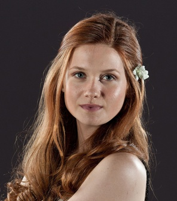
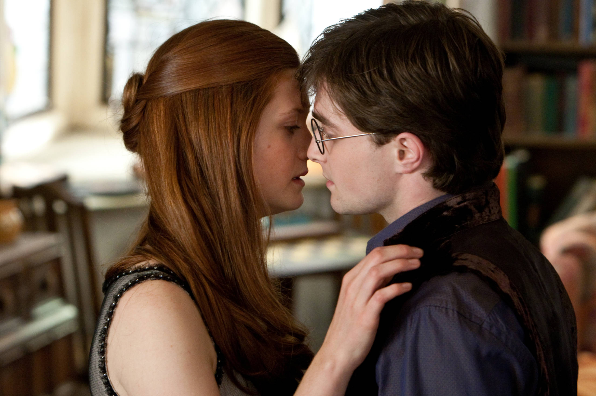
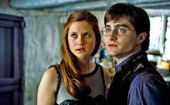
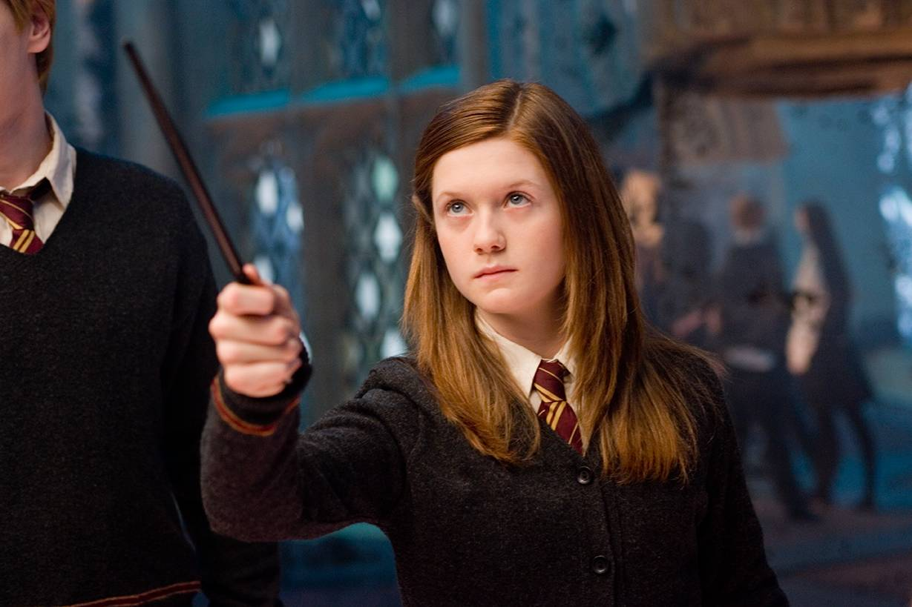

GINNY
ginny

Order of the Phoenix, Ginny has "given up on Harry months ago" (this is merely a ruse as Hermione previously
advised her to pretend to not be as interested in Harry and go out with a few other boys so Harry would eventually
notice her), and has a boyfriend, Michael Corner, whom she met at the Yule Ball. When Umbridge punishes Harry with a
"lifetime" Quidditch ban, Ginny replaces him as Gryffindor Seeker. In the last part of the book, Ginny breaks up with Michael
due to his sulking over

Quidditch Cup final,
later replacing him with Dean Thomas. She joins Dumbledore's Army and is one of five members who accompany Harry in his
attempt to rescue Sirius Black from the Department of Mysteries.
Near the end of this book
Ginny participates in the battle inside
the Ministry of Magic, but is forced to withdraw from the action due to a broken left ankle.
In Half-Blood Prince, after she casts a Bat-Bogey Hex on Zacharias Smith, Professor Slughorn respects her magical abilities enough to invite her to join his "Slug Club". Ginny becomes a permanent member
of the Gryffindor Quidditch team as Chaser,
and substitutes for Harry as Seeker when Severus Snape puts him in detention during the Quidditch Cup final. After witnessing Ginny kissing Dean in an empty corridor, Harry has an angry internal reaction.
